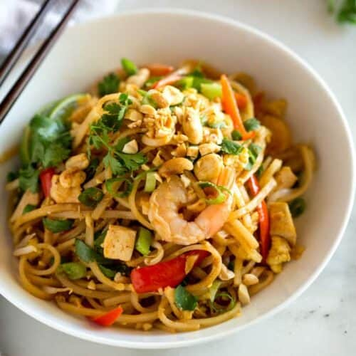

Pad Thai

Ingredients
- 8 oz. flat rice noodles
- 3 tbsp oil
- 3 cloves garlic, minced
- 8 oz. uncooked shrimp, chicken, or extra-firm tofu
- 2 eggs
- 1 cup fresh bean sprouts
- 1 red bell pepper, thinly sliced
- 1 red bell pepper, thinly sliced
- 1/2 cup dry roasted peanuts
- 2 limes
- 1/2 cup fresh cilantro, chopped
Pad Thai sauce:
- 3 tbsp fish sauce
- 1 tbsp low-sodium soy sauce
- 5 tbsp light brown sugar
- 2 tbsp rice vinegar
- 1 tbsp sriracha hot sauce (or to taste)
- 2 tbsp creamy peanut butter (optional)
Instructions
- Cook noodles according to package instructions, until tender. Rinse under cold water.
- Mix the sauce ingredients together. Set aside.
- Heat 1/2 tbsp of oil in a large saucepan or wok over medium-high heat.
- Add the shrimp, chicken or tofu, garlic and bell pepper. The shrimp will cook quickly, about 1-2 minutes on each side, or until pink. If using chicken, cook until just cooked through, about 3-4 minutes, flipping only once.
- Push everything to the side of the pan. Add a little more oil and add the beaten eggs. Scramble the eggs, breaking them into small pieces with a spatula as they cook.
- Add noodles, sauce, bean sprouts and peanuts to the pan (reserving some peanuts for topping at the end). Toss everything to combine.
- Top with green onions, extra peanuts, cilantro and lime wedges. Serve immediately!